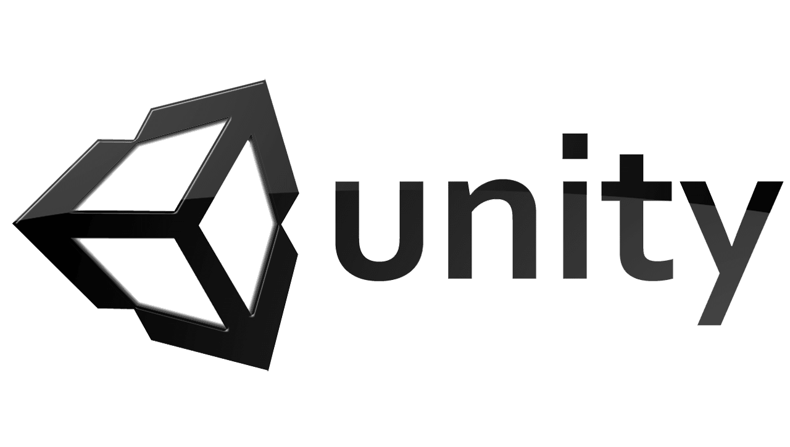

Resumen
UNIVERSE FRACTURE es un videojuego 2D free to play de lucha con partidas de alrededor de 3 minutos, con una cantidad de jugadores por partida (2 jugadores), cada partida tiene diferentes escenarios (2 por partida) donde los jugadores van cambiando entre escenarios constantemente, pero cada uno de estos se van a destruir conforme pasa el tiempo. Está estructurado para el crecimiento de personajes y escenario gradual, esto para enfocarse en un juego como servicio.
Historia
Los mejores luchadores de diferentes mundos son llamados para representar su universo en una batalla masiva entre 2 luchadores, solo uno ganara. Lucharán en la mezcla de todos los escenarios de donde vienen los luchadores. Esta lucha se genera por la gran fractura de los distintos universos y alteraciones entre ellos. En la historia de cada uno de los personajes se puede evidenciar su relación con esta fractura dimensional, Un ejemplo es ACRU, el cual fue un niño que nació en el universo de la Tierra, pero en una fractura dimensional cayó en el universos donde los humanos nunca existieron y se terminó criando y creciendo con los muertos, con un alto nivel de fuerza y velocidad además con la capacidad de hablar con cualquier tipo de muerto.
Objetivo
El objetivo principal de cada partida es sobrevivir, no importa cómo pero hay que tener en cuenta que los otros jugadores buscarán asesinarte, además cada uno de los 2 escenarios se irán destruyendo, por ende tiene que ir rotando de escenario.
Reglas
- La destrucción de escenarios obliga a los jugadores a luchar y a asesinar a otros.
Recompensas
- La recompensa principal es la medalla de la victoria.
Desarrollado en:
Unity

Unity
La plataforma de Unity se divide en 5 apartados dentro de su editor.
Explorador: Aquí es donde encontrarás la lista de los elementos que dispones, además de los elementos propios del editor que puedes utilizar, es un apartado de organización.
Inspector: En este apartado muestra las propiedades de los elementos del videojuego.
Jerarquía: Se catalogan los elementos según su importancia.
Escena: Diseño y maquetación de tu videojuego o una escena de este, donde cada de escena se divide por niveles en el editor.
Juego: Visualiza el videojuego en diferentes resoluciones para comprobar su calidad.